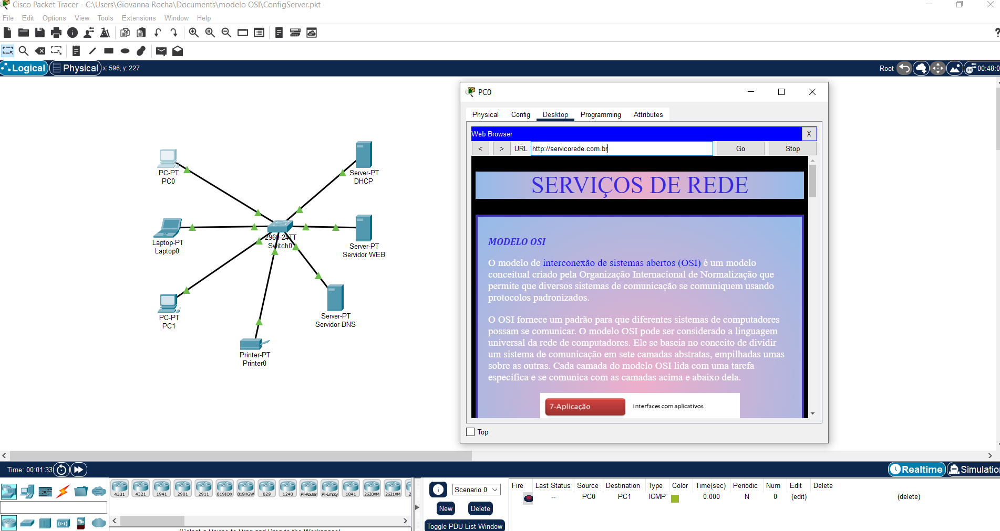

SERVIÇOS DE REDE
O trabalho foi feito no Cisco Packet Tracer, onde meu site foi hospedado no servidor Web e, no servidor DNS foi criado uma URL para este site por meio do endereço de IP. Pode ser acessado em qualquer dispositivo no Cisco Packet Tracer.

MODELO OSI
O modelo de interconexão de sistemas abertos (OSI) é um modelo conceitual criado pela Organização Internacional de Normalização que permite que diversos sistemas de comunicação se comuniquem usando protocolos padronizados.
O OSI fornece um padrão para que diferentes sistemas de computadores possam se comunicar. O modelo OSI pode ser considerado a linguagem universal da rede de computadores. Ele se baseia no conceito de dividir um sistema de comunicação em sete camadas abstratas, empilhadas umas sobre as outras. Cada camada do modelo OSI lida com uma tarefa específica e se comunica com as camadas acima e abaixo dela.

MODELO TCP/IP
O TCP/IP é fundamental para a rede de internet. Esses dois protocolos garantem que pacotes de informações cheguem a seu destino de forma correta e segura. Dessa forma, conseguimos tratar e definir os dados entre os dispositivos antes de alcançarem seus destinos.
Quando falamos de TCP, nos referimos a algo que faz toda a definição de como aplicações conseguem criar canais de comunicação através da rede. Também auxilia na quebra em pedaços de uma mensagem que será posteriormente reconstruída antes de chegar a seu destino.
Já o IP é o que define o endereço e o caminho do pacote de dados, ou seja, ele garante que as informações cheguem a seu destino correto. Ele é basicamente o “carteiro”, que recebe o item e o checa para ter certeza de que estará no local de seu objetivo.
UDP
O User Datagram Protocol (UDP) é um protocolo de Internet mais simples e sem conexão, no qual os serviços de verificação e recuperação de erros não são necessários. Com o UDP, não há sobrecarga para abrir, manter ou encerrar uma conexão — os dados são continuamente enviados para o destinatário, quer ele os receba ou não.
O protocolo UDP funciona de forma semelhante ao TCP, mas elimina todo o material de verificação de erros. Toda a comunicação de ida e volta introduz latência, tornando as coisas mais lentas. É usado quando a velocidade é desejável e a correção de erros não é necessária. Por exemplo, ele é frequentemente usado para transmissões ao vivo e jogos online.
FTP
O FTP é um antigo protocolo de transferência de arquivos entre computadores em redes locais ou na internet, sendo bastante usado por sistemas de hospedagem de sites. No entanto, ele é considerado inseguro para os padrões de hoje e navegadores modernos estão abandonando o suporte. Basicamente, permite a troca de arquivos entre dois computadores de modo direto, em que um ganha acesso às pastas do outro.
O FTP usa um servidor como o computador responsável por hospedar os arquivos. O cliente é o usuário que fará o acesso. A conexão é sempre autenticada com nome de usuário e senha, enquanto o servidor é geralmente acessado por um endereço de IP.
DNS
O DNS é uma sigla para sistema de nomes de domínio. Contém uma lista de nomes de domínio e permite que usuários encontrem uma página por meio desses nomes. Existem duas formas de acessar um site na internet: digitando o nome de domínio que você já está acostumado ou digitando o endereço IP da sua hospedagem. O DNS faz o trabalho de tradução desse endereço em palavras, que formam a URL, no endereço IP do servidor. É fundamental para o funcionamento da internet, para otimizar o desempenho e a segurança de um site.
O domínio é o nome do site (rockcontent.com, por exemplo), e o servidor de nomes armazena um conjunto deles.
DHCP
O protocolo DHCP, é um protocolo utilizado em redes de computadores que permite às máquinas obterem um endereço IP automaticamente. Por meio dele um servidor é capaz de distribuir automaticamente endereços de IP diferentes a todos os computadores à medida que eles fazem a solicitação de conexão com a rede. Essa distribuição dos IPs é feita em um intervalo pré-definido configurado no servidor. Sempre que uma das máquinas for desconectada o IP ficará livre para o uso em outra.
HTTP/HTTPS
O protocolo de transferência de hipertexto (HTTP – HyperText Transfer Protocol) é o protocolo padrão para a web. Por meio dele os navegadores requisitam as páginas da web e as recebem. Dessa forma, o HTTP define como são requisitadas as páginas da web, como são enviados os dados que o usuário insere em formulários e como o servidor envia mensagens de erro para o navegador do usuário.
Como o HTTP é um protocolo baseado em texto, os dados do usuário e do servidor podem ser interceptados ou alterados no meio do caminho. Nesse contexto, um usuário na rede pode interceptar os seus dados e lê-los ou, pior, alterar a página que você recebe ou a informação que envia para o servidor.
A maioria das explicações resume o HTTPS como um HTTP com o SSL (Secure Sockets Layer) ou, seu sucessor, o TLS (Transport Layer Security). TLS ou SSL são camadas de segurança que fornecem confidencialidade e integridade.
Com o uso do HTTPS, que é o HTTP seguro, adiciona-se alguns princípios de segurança, como confidencialidade, integridade e autenticação. Por confidencialidade, entende-se que a mensagem só é lida pelo destinatário real da mensagem. A integridade representa que a mensagem não foi alterada e o princípio da autenticação prova que o servidor é realmente quem diz ser.
WEBSERVER
Um web server é um sistema computacional que hospeda e fornece acesso aos conteúdos e aplicações através da internet. Geralmente contratado como um serviço, esse servidor recebe e processa as solicitações feitas por navegadores através de protocolos de rede como o HTTP ou HTTPS. Um servidor que presta esse tipo de serviço pode ser um computador físico ou instância de um datacenter, que armazena e disponibiliza o conteúdo para ser acessado por meio da internet.
Esse acesso geralmente é feito por computadores e dispositivos móveis através de solicitações feitas por browsers, ou seja, softwares navegadores como o Google Chrome e Microsoft Edge. Essas solicitações incluem o endereço do conteúdo desejado, como por exemplo uma página HTML, um arquivo de áudio, vídeo ou imagem.
Os servidores web são responsáveis por hospedar sites, aplicativos, serviços de e-mail, armazenamento em nuvem e outros serviços online.